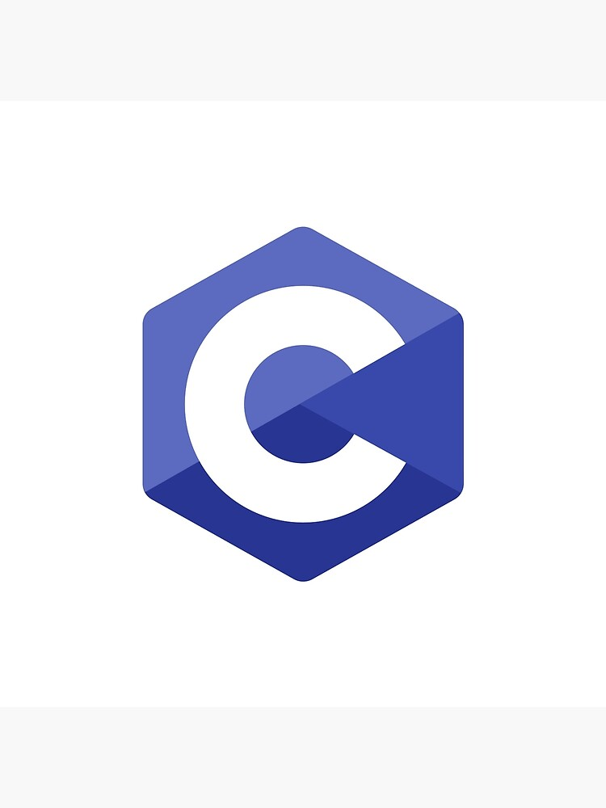

The Language "C"
C (pronounced like the letter c) is a general-purpose computer programming language. It was created in the 1970s by Dennis Ritchie, and remains very widely used and influential. By design, C's features cleanly reflect the capabilities of the targeted CPUs. It has found lasting use in operating systems, device drivers, protocol stacks, though decreasingly[6] for application software. C is commonly used on computer architectures that range from the largest supercomputers to the smallest microcontrollers and embedded systems.